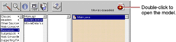
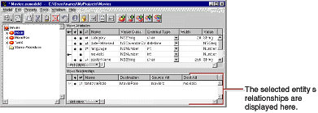
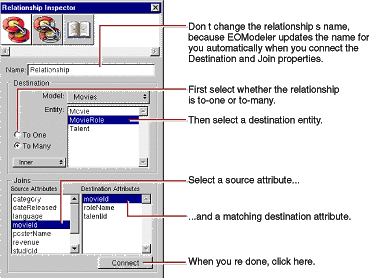
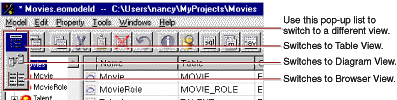
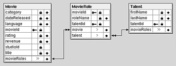
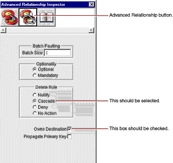

| PATH |

The model created for you by the wizard is just a starting point. For most applications, you need to do some additional work to your model to make it useful in your application. To refine your model so that it can be used in the Movies application, you'll ultimately need to do all of the following:
These steps are described in more detail throughout the rest of this tutorial.
Movies.eomodeld.
Project Builder opens your model file in EOModeler, launching EOModeler first if it isn't already running. EOModeler displays your model in the Model Editor. It lists the entities for the tables you specified in the wizard-Movie, MovieRole, and Talent.
By default, the wizard makes all of an entity's attributes, except primary keys, class properties. When an attribute is a class property, it means that the property is a part of your enterprise object, usually as an instance variable.
You should mark as class properties only those attributes whose values are meaningful in the objects that are created when you fetch from the database. Attributes that are essentially database artifacts, such as primary and foreign keys, shouldn't be marked as class properties unless the key has meaning to the user and must be displayed in the user interface.
Eliminating primary and foreign keys as class properties has no adverse effect on how Enterprise Objects Framework manages enterprise objects in your application.
The right frame switches from a view of the entities in the model to a view of Movie's attributes.
A symbol in the first column means that the attribute is a primary key for the selected entity. A symbol in the second column means that the attribute is a class property.
studioId attribute, which
is a foreign key. The wizard didn't make movieId a
class property because it is a primary key.The Movies application uses two pairs of inverse relationships. The first pair defines the relationship between the Movie and MovieRole entities, while the second pair defines the relationship between the MovieRole and Talent entities. An Enterprise Objects Framework relationship is directed; that is, a relationship has a source and a destination. Generally models define a relationship for each direction.
The right frame of the Model Editor shows the Movie's relationships as well as its attributes.

If your Movie
entity doesn't have a movieRoles relationship,
it means that the database server's schema information for your
database didn't have enough information for the wizard to create
them. You need to create them by hand now. The next several steps explain
how.
A new relationship named "Relationship" is added in the table view at the bottom of the Model Editor. The new relationship is already selected.
![[image: ../Art/inspector.gif]](../Art/inspector.gif) button
(in the toolbar) to inspect the relationship.
button
(in the toolbar) to inspect the relationship.
movieId in
the Source Attributes list.movieId in
the Destination Attributes list.EOModeler automatically renames the relationship based on the name of the destination entity. For example, after connecting a to-many relationship from Movie to MovieRole, EOModeler names the relationship "movieRoles". To-one relationships are named with the singular form of the destination entity's name. For example, EOModeler names the inverse to-one relationship (from MovieRole to Movie) "movie".
If the wizard created your relationship and used a name other than "movieRoles", consider renaming the relationship. The rest of this tutorial assumes that your relationships are named using EOModeler's naming convention.
A to-one relationship named "movie" in the MovieRole entity where
movieId.movieId.A to-one relationship named "talent" in the MovieRole entity where
talentId.talentId.A to-many relationship named "movieRoles" in the Talent entity where
talentId.talentId.
At this point your model has all the relationships it needs. The Diagram View gives you an overview of the entities in the model and their relationships to other entities.

You can also use the Diagram View to edit your model. Double-click an attribute or relationship to change its name. To create a relationship and its inverse, Control-drag from the relationship's source attribute to its destination attribute.
There are several additional settings you use to configure a relationship's referential integrity rules. For these, use the Advanced Relationship Inspector.
movieRoles relationship.
If the wizard created relationships for you, the relationship's delete rule should already be set to Cascade. You specified this in the wizard. If you created your relationships by hand, you'll have to set the delete rule yourself.
As with the delete rule, if the wizard created relationships for you, the relationship's Owns Destination box should already be checked. If you created your relationships by hand, you'll have to check this box yourself.
A relationship that
propagates its primary key propagates its key
value to newly inserted objects in the destination of the relationship.
In this case, checking the Propagate Primary Key box means that
if you create a new MovieRole and add it to a Movie's list of
MovieRoles, the Movie object automatically assigns its movieId value
as the value for the new MovieRole's movieId property.
This option is usually used with relationships that own their destination. For more information on propagating primary keys, see "Where Do Primary Keys Come From?".
movieRoles relationship
has its delete rule set to Deny.movieRoles relationship
owns its destination.movieRoles relationship
to propagate its primary key.Enterprise Objects Framework uses primary keys to identify
enterprise objects in memory, and it works best if you never change
an enterprise object's primary key from its initial value. Consequently,
applications usually generate and assign primary key values automatically
instead of having users provide them. For example, the Movies application assigns
a movieId value to a
new movie when it's created, and the value never changes afterward.
The Movies interface doesn't even display movieId values
because they aren't meaningful to users of the application.
Enterprise Objects Framework provides several mechanisms for generating and assigning unique values to primary key attributes. By default, Enterprise Objects Framework uses a native database mechanism to assign primary key values. See the chapter "Answers to Common Design Questions" in the Enterprise Objects Framework Developer's Guide for more information.
The Movies application generates primary key values for Movie and Talent objects using the default mechanism, but MovieRole is a special case because
movieId and talentId,
must match the corresponding attributes in the MovieRole's Movie
and Talent objects. The default mechanism generates new, unique
values.Instead of the default mechanism, Enterprise Objects Framework
uses primary key propagation to assign primary keys to MovieRole
objects. By configuring the Movie's movieRoles relationship
to propagate primary key, the Framework knows to assign a new MovieRole's movieId to
the same value as the movieId of
the MovieRole's Movie. Similarly, a new MovieRole's talentId is
set to the same value as the talentId of
the MovieRole's Talent.
© 2001 Apple Computer, Inc.